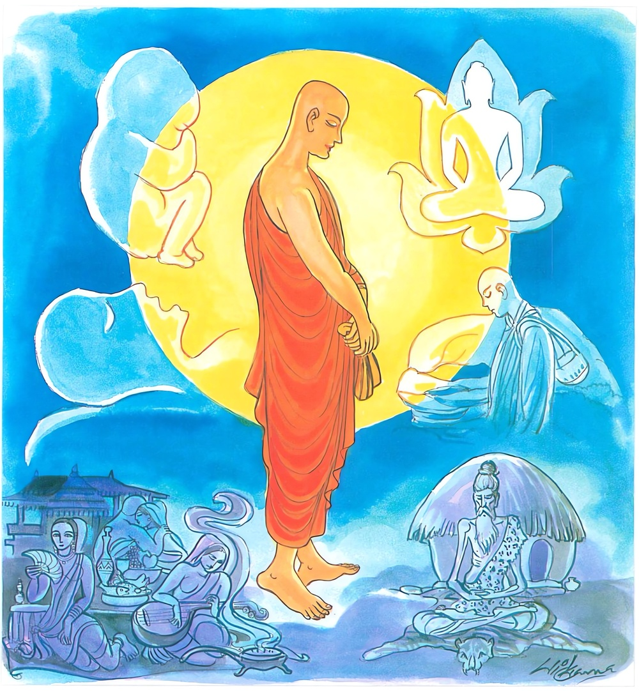

26-36 නට පුත්රයා
මෙම කතාව ධම්මපද අටුවාවෙන් ද කියවන්න.
චුතිං යො’වෙදි සත්තානං උපපත්තිං ච සබ්බසො
අසත්තං සුගතං බුද්ධං තමහං බ්රූමි බ්රාහ්මණං.
යම් ශ්රමණයෙක් සත්ත්වයන්ගේ ච්යුති (ආසන්න) ය ද ප්රතිසන්ධි (ආසන්න) ය ද සර්වප්රකාරයෙන් ප්රකට කොට දන්නේ ද, (තෘෂ්ණා වශයෙන්) අලග්න වූ මනා ගති ඇති සිවුසස් පසක් කළ ඒ උත්තමයා බ්රාහ්මණ යැ යී මම් කියමි.

“හිත්වා රතිඤ්ච අරතිඤ්ච” යනාදී වූ මේ ධර්මදේශනාව යමකු ඇරැබැ දෙසූ සේක් ද, ඔහු පිළිබඳ කතා පුවත මෙයට මුලින් කියූ නටපුත්රයන්ගේ කතා පුවත වැනි වේ.
මෙහි ලා බුදුරජානන් වහන්සේ “මහණෙනි! මාගේ පුත්ර තෙමේ රතියත් අරතියත් දෙක ම පහ කොට සිටියේ ය”යි වදාරා මේ ධර්මදේශනාව කළ සේක.
හිත්වා රතිඤ්ච අරතිඤ්ච සීතිභූතං නිරූපධිං,
සබ්බලොකාභිභුං වීරං තමහං බ්රූමි බ්රාහ්මණන්ති.
ඇල්ම ද නො ඇල්ම ද දුරු කොට සිහිල් වූ උපධි රහිත වූ මුළු ලොව මැඩ සිටි වීර්ය්යවත් වූ ඔහු, මම බමුණු යි කියමි.
හිත්වා රතිං ච අරතිං ච සීතිභුතං නිරූපධිං = ඇල්ම ද නො ඇල්ම ද දුරු කොට සිහිල් වූ උපධි රහිත වූ.
‘රති’ නම්: මෙහි ඇල්ම ය. ‘අරති’ නම්: වන සෙනසුන්හි උකටලී බව ය. “පන්තෙසු වා සෙනාසනෙසු අඤ්ඤතරඤ්ඤතරෙසු අධිකුසලධම්මෙසු අරති අරතිකා අනභිරති අනභිරමණා උක්කණ්ඨිතා පරිතස්සිතා අයං වුච්චති අරති” යි විභඞ්ගයෙහි ආයේ ය. වනයෙහි මිනිසුන්ගේ හැසිරීම් නැති මිනිසුන් නො සාන නො වපුරණ දුර සෙනසුන්හි නො ඇලීම අන්යතර අන්යතර අධිකුශල ධර්මයන්හි නො ඇලීම ‘අරති’ යි කියන ලදී. අතිශයින් සිඳී ගියේ, සංස්කාර ක්ලේශදරථයන් සන්සිඳ වූයේ ‘සීතිභුත’ නම්. ඛන්ධ - කිලෙස - අභිසඞ්ඛාර - කාමගුණ යන මොවුහු උපධි නම් වෙති. එහි බන්ධුපධි නම්, පස්වැදෑරුම් වූ උපාදාන ස්කන්ධයෝ ය. කිලෙසූපධි නම්, ලොභ - දෝස - මෝහාදී වූ දසවැදෑරුම් වූ ක්ලේශයෝ ය. අභිසඞ්ඛාරඋපධි නම්, කාම - රූප - අරූප යන තෙවැදෑරුම් වූ භූමීන් පිළිබඳ කුශල චෙතනාවෝ ය. මේ දෙකොටස ම සංස්කාර ස්කන්ධයෙහි ඇතුළත් ය. කාමගුණඋපධි නම්, ඇසින් දතයුතු වූ කණින් ඇසිය යුතු වූ නාසයෙන් ගතයුතු වූ දිවෙන් විඳිය යුතු වූ සිරුරෙන් පැහැසිය යුතු වූ රූප - ශබ්ද - ගන්ධ - රස - ස්ප්රෂ්ටව්යයෝ ය. ඔවුහු රූපස්කන්ධයෙහි ඇතුළත් වෙති. උපධි යි ගණුලබන්නේ පඤ්චස්කන්ධය යි. එහි වූ රූප කොටස රූපක්ඛන්ධ නම්. සෙසු කොටස් සතර නාම නම්. මෙසේ බෙදෙන මේ කොටස් පස නාම - රූප විසින් වෙන් කොට ගෙණ ව්යවස්ථා කොට, ඉනික්බිති මේ නාම - රූපයන් පිළිබඳ අවිද්යා දී වූ හේතූ ප්රත්යයයන් ද නුවණින් දැඩිව අල්ලා ගෙණ පරීක්ෂා කොට සියලු උපධීහු අනිත්යයහ, දුඃඛයහ, පෙරළෙන සැහැවි ඇතියහ,යි අනිත්ය - දුඃඛලක්ෂණයන්ට නගා විදසුන් පිළිවෙලින් ගොස් රහත් මග නුවණින් මුන් නසා සිටියේ ‘නිරුපධි’ නම් වේ. මෙහි අනිත්යදුඃඛලක්ෂණ විසින් වැඩූයේ අනාත්මලක්ෂණ විසින් වැඩූයේ ද වේ. “යදනිච්චං තං දුක්ඛං, යං දුක්ඛං තදනත්තා”යි වදාළ බැවිනි. මෙහි අනිත්යලක්ෂණයෙන් දුඃඛලක්ෂණයත් දුඃඛලක්ෂණයෙන් අනාත්මලක්ෂණයත් දක්වන ලද ය. මෙ ද දත යුතු ය:-
“කායං ච භිදුරජ ඤත්වා විඤ්ඤාණං ච පභඞ්ගුරං,
උපධීසු භයං දිස්වා ජාතිමරණමච්චගා,
සම්පත්වා පරමං සන්තිං කාලං කඞ්ඛති භාවිතත්තො”
යනු. සිරුර බිඳෙන සුලුය යි ද, සිතත් බිදෙන සුලුය යි ද දැන උපධීන්හි බිය දැක ඉපදීම හා මරණය ඉක්මියේ ය. උතුම් වූ නිවනට පැමිණ භාවනාවශයෙන් වැඩූ අත්බව් ඇතියේ තමන්ගේ පරිනිර්වාණ කාලය බලාපොරොත්තු වේ යනු අරුත්. ඛන්ධ - කිලෙස - අභිසඞ්ඛාර - කාමගුණ යන මොවුන් නසා සිටියේ ‘නිරුපධි’ නම්.
සබ්බලොකාභිභුං වීරං තං අහං බ්රෑමි බ්රාහ්මණං = මුළු ලොව මැඩ ගෙණ සිටි වීර්ය්යවත් ඔහු, මම බමුණු යි කියමි.
සියලු ස්කන්ධයෝ මතු පහළවීම නැසූ ශීල - සමාධි - ප්රඥා - විමුක්ති - විමුක්තිඥානදර්ශනාදියෙන් මුළු ලොව මැඩ ලූයේ ‘සබ්බාභිභූ ය. චතුර්විධ සම්යක් ප්රධාන වීර්ය්යයෙන් වීර්ය්යවත් වූයේ පහ කළ කෙලෙස් සැලීම් ඇතියේ ‘වීර’ නම්.
පස්කම්හි ඇල්මක් වනසෙනසුන්හි නො ඇල්මත් දුරු කොට නිවී ගිය සිත් ඇත්තා වූ උපධි රහිත වූ සියලු ස්කන්ධ ලෝකය මැඩ ගෙණ සිටියා වූ වීර්ය්යවත් පුද්ගල තෙමේ බ්රාහ්මණ නම් වන්නේ ය.
ධර්මදේශනාවගේ අවසානයෙහි බොහෝ දෙන සෝවන්ඵලාදියට පැමිණියාහු ය.
නටපුත්ර වස්තුව නිමි.